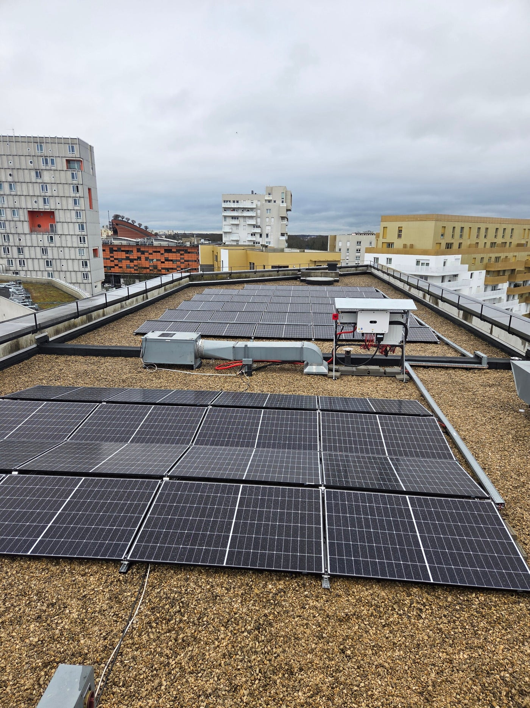
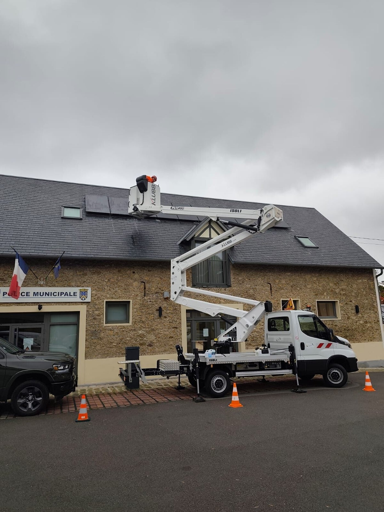

Conception technique
Étude de faisabilité, potentiel solaire, dimensionnement des panneaux, onduleurs, structures et systèmes électriques.
Énergies renouvelables
ELEMENT Technology développe et installe des installations solaires performantes : toitures industrielles et tertiaires, ombrières de parking, centrales au sol, pour les acteurs publics et privés.
Prestations photovoltaïques
De l'analyse de potentiel à la mise en service complète, en passant par les études technico-économiques, les démarches administratives et le raccordement réseau.
Étude de faisabilité, potentiel solaire, dimensionnement des panneaux, onduleurs, structures et systèmes électriques.

Pose, montage, raccordements, protections et supervision, avec des équipes qualifiées.

Nettoyage, contrôles périodiques, monitoring à distance, interventions et reporting.
Étude de faisabilité approfondie, analyse du potentiel solaire du site, dimensionnement précis des panneaux, onduleurs, structures et systèmes électriques. Nous optimisons le rendement, la rentabilité et l'intégration architecturale : toitures, ombrières, parkings et sites au sol.
Exécution des installations clés en main : pose des panneaux, montage des structures, raccordements électriques en courant continu et alternatif, intégration des protections et des systèmes de supervision. Nos équipes qualifiées garantissent une mise en œuvre conforme aux normes en vigueur, notamment NF C 15-100 et QR PV, dans le respect des délais.
Nous prenons en charge l'ensemble des formalités pour libérer nos clients de cette charge : déclaration préalable ou permis de construire, demande de raccordement Enedis / RTE, demande de raccordement à EDF OA ou autoconsommation avec ou sans surplus, obtention du Consuel, déclaration ICPE si nécessaire, participation aux appels d'offres CRE le cas échéant.
Évaluation technique et économique des centrales en exploitation : contrôle visuel, mesures électriques, thermographie, analyse des performances réelles par rapport aux performances attendues, identification des pertes et des points de dégradation.
Réparation, repowering partiel ou total, remplacement de composants obsolètes : onduleurs, câbles, panneaux. Mise en conformité avec les évolutions réglementaires et normatives actuelles, optimisation pour améliorer le rendement et prolonger la durée de vie.
Contrats de maintenance annuels ou pluriannuels adaptés : nettoyage des panneaux, contrôles périodiques, monitoring à distance, interventions rapides en cas de panne, garanties prolongées, reporting de production et d'incidents. Objectif : maximiser la disponibilité et sécuriser votre revenu énergétique sur le long terme.
Que votre projet concerne une toiture industrielle, une ombrière de parking, un bâtiment tertiaire, un site agricole ou une centrale au sol, nous vous accompagnons pour produire une énergie verte, compétitive et maîtrisée.